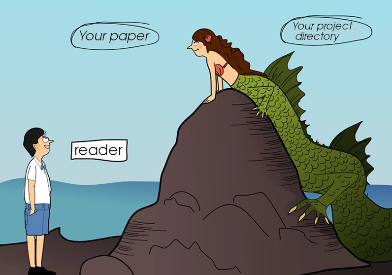
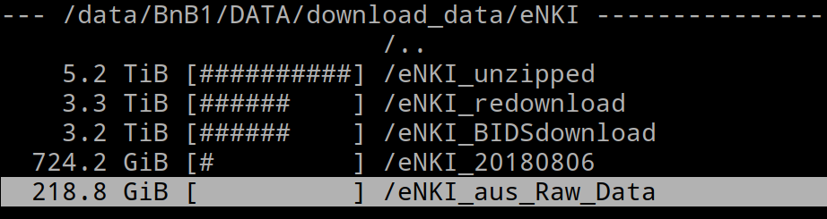

Research Data Management with DataLad
üöÄ
for open and transparent science
Adina Wagner
 @AdinaKrik
@AdinaKrik |
|
|
Psychoinformatics lab,
Institute of Neuroscience and Medicine, Brain & Behavior (INM-7) Research Center Jülich |
Slides: https://github.com/datalad-handbook/course/
Research data management (RDM)
- (Research) Data = every digital object involved in your project: code, software/tools, raw data, processed data, results, manuscripts ...
- Data needs to be managed FAIRly- from creation to use, publication, sharing, archiving, re-use, or destruction:
- Research data management is a key component for reproducibility, efficiency, and impact/reach of data analysis projects
Why data management?
⬆
This a metaphor for most projects after publication
Why data management?
This a metaphor for reproducing (your own) research
a few months after publication
⬇

Why data management?
| This is a metaphor for many computational ➡ clusters without RDM |
Why data management?
- External requirements and expectations
- Funders & publishers require it
- Scientific peers increasingly expect it
- Intrinsic motivation and personal & scientific benefits
- The quality, efficiency and replicability of your work improves
- The most interesting datasets of our field require it
- Exciting datasets (UKBiobank, HCP, ...) are orders of magnitudes larger than previous public datasets, and neither the computational infrastructure nor analysis workflows scale to these dataset sizes
Today
- General overview of the tool
- DataLad-centric solutions to real-life data management problems
- Hands-on experience
- Introduction and core concepts
Acknowledgements
|
Funders


Collaborators
|
polling system for live-feedback
Some more testing...
Let's start
 Core Features:
Core Features:
- Joint version control (Git, git-annex) for code, software, and data
- Provenance capture: Create and share machine-readable, re-executable records of your data analysis for reproducible, transparent, and FAIR research
- Data transport mechanisms: Install or share data extremely lightweight, retrieve it on demand, drop it to free up space without losing data access or provenance
Examples of what DataLad can be used for:
- Publishing datasets and making them available via GitHub, GitLab, or similar services
- Creating and sharing reproducible, open science: Sharing data, software, code, and provenance
- Behind-the-scenes infrastructure component for data transport and versioning (e.g., used by OpenNeuro, brainlife.io , the Canadian Open Neuroscience Platform (CONP), CBRAIN)
- Central data management and archival system
Version control
Why version control?

- keep things organized
- keep track of changes
- revert changes or go back to previous states
Version Control
- DataLad knows two things: Datasets and files
- A DataLad dataset is an Git/git-annex repository:
- Git: industry-standard for version control for small files. git-annex: allows version control + transport for large files
- Content and domain agnostic: Manage your science, or your music library
- Minimization of custom procedures or data structures: A PDF stays a PDF, and users won't lose data or data access if DataLad vanishes


Provenance capture
Your past self is the worst collaborator:
Provenance capture
A DataLad dataset can link analysis/command outputs to the code/command execution that produced it, the data it was derived from, and the software environment it was computed in
$ datalad run -m "Perform eye movement event detection"\
--input 'raw_data/*.tsv.gz' --output 'sub-*' \
bash code/compute_all.shProvenance capture
- Those "run records" are stored in a dataset's history and can be automatically rerun:
$ datalad rerun eee1356bb7e8f921174e404c6df6aadcc1f158f0
[INFO] == Command start (output follows) =====
[INFO] == Command exit (modification check follows) =====
add(ok): sub-01/LC_timeseries_run-1.csv (file)
...
save(ok): . (dataset)
action summary:
add (ok: 45)
save (notneeded: 45, ok: 1)
unlock (notneeded: 45)
...Datasets for yourself and others
- DataLad is built to maximize interoperability and use with hosting and storage technology: Share datasets with the services you use anyway

Datasets for yourself and others
- DataLad is built to maximize interoperability and use with hosting and storage technology: Share datasets with the services you use anyway

Why share stuff as a dataset?
- Disk-usage magic: Have access to more data than your hard drive has space
- Collaboration and updating mechanisms: Alice shares her data with Bob. Alice fixes a mistake and pushes the fix. Bob says "datalad update" and gets her changes. And vice-versa.
- Transparency: Shared datasets keep their history
Plenty of data, but little disk-usage
- Cloned datasets are lean. "Meta data" (file names, availability) are present, but no file content:
$ datalad clone git@github.com:psychoinformatics-de/studyforrest-data-phase2.git
install(ok): /tmp/studyforrest-data-phase2 (dataset)
$ cd studyforrest-data-phase2 && du -sh
18M .$ ls
code/
src/
stimuli
sub-01/
sub-02/
sub-03/
sub-04/
[...]$ datalad get sub-01/ses-movie/func/sub-01_ses-movie_task-movie_run-1_bold.nii.gz
get(ok): /tmp/studyforrest-data-phase2/sub-01/ses-movie/func/sub-01_ses-movie_task-movie_run-1_bold.nii.gz (file) [from mddatasrc...]$ datalad drop sub-01/ses-movie/func/sub-01_ses-movie_task-movie_run-1_bold.nii.gz
drop(ok): /tmp/studyforrest-data-phase2/sub-01/ses-movie/func/sub-01_ses-movie_task-movie_run-1_bold.nii.gz (file) [checking https://arxiv.org/pdf/0904.3664v1.pdf...]Collaboration and updating mechanisms
- Share data with others and keep them up to date, or get data from someone and stay up to date
- Have all updates in your dataset history, but pick the version you want to work with


Transparency
- No need to ask colleagues what they did, you can ask the files how they came to be:
$ git log some_result_file
commit 593aa8018116ca9d198ce4bfd9e09af3476c7a9b
Author: Elena Piscopia elena@example.net
Date: Thu Sep 3 13:35:51 2020 +0200
[DATALAD RUNCMD] Re-create the results with most recent data
=== Do not change lines below ===
{
"chain": [
"38e18c0cd73627e10b620b1ba08e4be2caba18e7"
],
"cmd": "bash code/mycode.sh",
"dsid": "57ce4457-a29b-4bd0-be6f-a9da8d46aee3",
"exit": 0,
"extra_inputs": [],
"inputs": data/input_data/*.nii.gz,
"outputs": [],
"pwd": "."
}
^^^ Do not change lines above ^^^
$ datalad rerun 593aa8018116caDatasets scale!
adina@bulk1 in /ds/hcp/super on git:master❱ datalad status --annex -r
15530572 annex'd files (77.9 TB recorded total size)
nothing to save, working tree cleancommon tales of RDM in science:
Raw-data mismanagement
- Multiple large datasets are available on a compute cluster üèû
- Each researcher creates their own copies of data ⛰
- Multiple different derivatives and results are computed from it üèî
- Data, copies of data, half-baked data transformations, results, and old versions of results are kept - undocumented üåã
Example: eNKI dataset

- Raw data size: 1.5 TB
- + Back-up: 1.5 TB
- + A BIDS structured version: 1.5 TB
- + Common, minimal derivatives (fMRIprep): ~ 4.3TB
- + Some other derivatives: "Some other" x 5TB
- + Copies of it all or of subsets in home and project directories
Example: eNKI dataset
Example: eNKI dataset
- Raw data size: 1.5 TB
- + Back-up: 1.5 TB
- + A BIDS structured version: 1.5 TB
- + Common, minimal derivatives (fMRIprep): ~ 4.3TB
- + Some other derivatives: "Some other" x 5TB
- + Copies of it all or of subsets in home and project directories
How much storage capacity does a typical compute cluster have?
Can we buy more hard drives?
Depends
If your institution doesn't care about money or the
environment, more disk space can help...
üí∏ü§∑üåè
But with a certain amount of data, simply "stocking up"
becomes not only ridiculous, but also infeasible:
HCP: 80TB
UKBiobank (current): 42TB
common tales of RDM in science:
A lack of documentation and provenance
-
pycharm $PWD
Find out more
|
Comprehensive user documentation in the DataLad Handbook (handbook.datalad.org) |
|
 |
|
 |
|
 |
|
Requirements
- DataLad version 0.12.2 or later (Installation instructions at handbook.datalad.org)
Further info and reading
Everything I am talking about is documented in depth elsewhere:- General DataLad tutorial: handbook.datalad.org/basics/intro.html/
- How to structure data analysis projects: handbook.datalad.org/r.html?yoda
- More DataLad tutorials: DataLad YouTube channel
Open an issue on GitHub if you have more questions!
HCP data structure
- HCP data is available in full, or in subsets (for speedier installation), from GitHub:
Get HCP data via DataLad
- datalad clone a GitHub repository
$ datalad clone \
git@github.com:datalad-datasets/human-connectome-project-openaccess.git \
HCP
install(ok): /.../HCP (dataset)$ datalad get HCP1200/221218/T1w/T1w_acpc_dc.nii.gz
install(ok): /tmp/HCP/HCP1200/221218/T1w (dataset)
[Installed subdataset in order to get /tmp/HCP/HCP1200/221218/T1w/T1w_acpc_dc.nii.gz]
get(ok): /tmp/HCP/HCP1200/221218/T1w/T1w_acpc_dc.nii.gz (file) [from datalad...]
action summary:
get (ok: 1)
install (ok: 1)HCP dataset structures
- Dataset structure follows HCP data layout:
- subject-ID
- data directories (unprocessed, T1w, MNINonLinear, MEG, release notes)
- The full HCP dataset consists of numerous subdatasets (subjects, data directories)

HCP dataset structures
- The HCP subset datasets usually are a single dataset (advantage: much faster installation)
- Some are available in BIDS-like structures
- You can create such subsets yourself or request them by emailing us paths
FAIR, large-scale data processing
Basic organizational principles for datasets
Read all about this in the chapter on YODA principles |
|
- do not touch/modify raw data: save any results/computations outside of input datasets
- Keep a superdataset self-contained: Scripts reference subdatasets or files with relative paths
Basic organizational principles for datasets
- Record where you got it from, where it is now, and what you do to it